Static and Dynamic Forces
11
Learning Outcome
When you complete this learning material, you will be able to:
Perform calculations related to static and dynamic forces acting on a body.
Learning Objectives
You will specifically be able to complete the following tasks:
- 1. Define and evaluate forces in terms of moments and couples.
- 2. Define and calculate centroids and first and second moments of areas.
- 3. Define and calculate the different types of stress.
- 4. Define strain, modulus of elasticity, Poisson's ratio and perform calculations.
- 5. Describe the thermal expansion of bars, including reactions, under conditions of restricted expansion and reactions of bars composed of dissimilar metals.
- 6. Define and calculate shear forces and bending moments for simply supported beams and cantilevers.
- 7. Perform calculations involving the fundamental torsion equation and explain the relationship between torque and stress.
- 8. Explain the relationship between torque and power, and calculate maximum and mean torque for solid shafts of circular cross section.
- 9. Calculate stress in coupling bolts due to torque.
Objective 1
Define and evaluate forces in terms of moments and couples.
STATICS AND DYNAMICS
The mechanics of rigid bodies is divided into two areas: statics and dynamics. Statics is the study of forces acting on a body that is at rest or moving at a uniform velocity. Dynamics is the study of the forces acting on a moving body that is accelerating or decelerating.
MOMENTS
A moment of a force is a measure of the tendency of a body to rotate about a specific point or axis when the force is applied to it. A moment is identified both by its magnitude and direction, causing the affected body to tend to rotate in either a clockwise or an anticlockwise direction.
When two or more opposing forces, or their resulting moments, are in balance and their algebraic sum is zero, then the body in question is in equilibrium and there will be no change to its current state of motion. That is, if it is stationary, then it will remain so. If it is moving, then it will continue to move at a constant velocity.
An imbalance in moments exists due to a force not having an equal and opposite force directly along its line of action. The moment of a force is the product of the force and its perpendicular distance from a relevant point.
An object is in equilibrium if the algebraic sum of all the forces or moments acting on it is zero. Even though the forces are in equilibrium, they may exist in different planes and directions. A useful way of evaluating these forces is to understand the moments that they create.
The moment \( M \) (units are in Newton-meters or Nm) is the product of force \( F \) and length \( l \) which gives the equation:
$$ M = Fl $$
Example 1
What is the magnitude and direction of the force shown in Fig. 1?
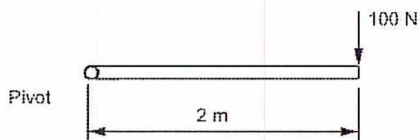
A horizontal bar is shown with a pivot at its left end, indicated by a small circle and the label 'Pivot'. A downward arrow representing a force is applied at the right end of the bar, labeled '100 N'. A horizontal double-headed arrow between the pivot and the point of application of the force is labeled '2 m'.
Figure 1
Force Acting About a Pivot
Answer
From the equation \( M = Fl \) , the moment is
$$ \begin{aligned} M &= Fl \\ &= 100 \text{ N} \times 2 \text{ m} \\ &= \mathbf{200 \text{ Nm}} \text{ (Ans.)} \end{aligned} $$
The force acts downwards and in a clockwise direction.
Example 2
What is the magnitude and direction of the force shown in Fig. 2?
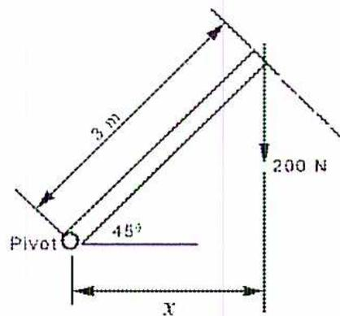
A bar is shown at an angle of \( 45^\circ \) above a horizontal dashed line. The bar is pivoted at its lower end, labeled 'Pivot'. A vertical downward arrow representing a force is applied at the upper end of the bar, labeled '200 N'. The length of the bar from the pivot to the point of application of the force is labeled '3 m'. A horizontal double-headed arrow from the pivot to the vertical line of action of the force is labeled 'x'.
Figure 2
Force Acting About an Angled Pivot
Answer
First the perpendicular distance is determined.
$$ \begin{aligned}\cos A &= \frac{x}{h} \\ x &= h \times \cos A \\ x &= 3 \text{ m} \times \cos 45^\circ \\ &= 3 \text{ m} \times 0.7071 \\ &= 2.12 \text{ m}\end{aligned} $$
Using the equation, \( M = Fl \) , the moment is
$$ \begin{aligned}M &= Fl \\ &= 200 \text{ N} \times 2.12 \text{ m} \\ &= 424 \text{ Nm (Ans.)}\end{aligned} $$
The force acts downwards and its moment is in a clockwise direction.
STATIC EQUILIBRIUM
Moments are useful to evaluate situations where there are multiple forces acting on an object. A system of forces is in equilibrium if the algebraic sums of the resultant forces and moments are balanced or their algebraic sum is zero. The directions of the forces can be chosen according to the most convenient orientation, but a logical approach is to assume that vertical, horizontal and rotational forces and moments are balanced.
To establish equilibrium, find convenient sets of moments and build equations to ensure that:
- 1. The sum of vertical forces is zero.
- 2. The sum of horizontal forces is zero.
- 3. The sum of the clockwise moments equals the sum of the anticlockwise moments.
Example 3
A simply supported beam is loaded as shown in Fig. 3. What are the required supporting forces \( R_1 \) and \( R_2 \) to maintain the beam in equilibrium?
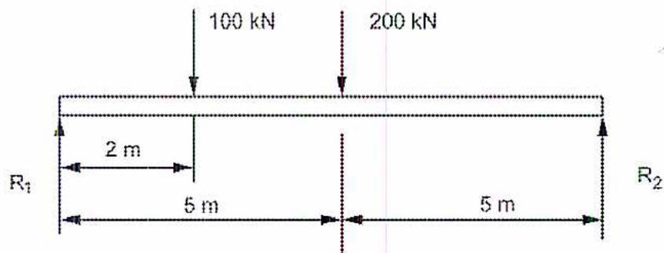
Figure 3
Simply Supported Beam
Answer
Convenient places to take moments are around \( R_1 \) and \( R_2 \) . For \( R_1 \) , the equation is:
Taking moments around \( R_1 \)
$$ \begin{aligned} \text{clockwise moment} &= \text{anticlockwise moment} \\ (100 \text{ kN} \times 2 \text{ m}) + (200 \text{ kN} \times 5 \text{ m}) &= R_2 \text{ kN} \times 10 \text{ m} \\ R_2 \text{ kN} &= \frac{(100 \text{ kNm} \times 2 \text{ m}) + (200 \text{ kNm} \times 5 \text{ m})}{10 \text{ m}} \\ R_2 &= 20 \text{ kN} + 100 \text{ kN} \\ R_2 &= 120 \text{ kN (Ans.)} \end{aligned} $$
Taking the moments around \( R_2 \)
clockwise moment = anticlockwise moment
$$ R_1 \text{ kN} \times 10 \text{ m} = (100 \text{ kN} \times 8 \text{ m}) + (200 \text{ kN} \times 5 \text{ m}) $$
$$ R_1 = \frac{800 \text{ kNm} + 1000 \text{ kNm}}{10 \text{ m}} $$
$$ R_1 = 80 \text{ kN} + 100 \text{ kN} $$
$$ R_1 = 180 \text{ kN (Ans.)} $$
Looking at the vertical forces (there are no horizontal forces).
vertical forces downwards = vertical forces upwards
$$ 100 \text{ kN} + 200 \text{ kN} = 120 \text{ kN} + 180 \text{ kN} $$
$$ 300 \text{ kN} = 300 \text{ kN (Ans.)} $$
COUPLES
A couple has two parallel forces that are equal in magnitude, opposite in direction, and separated by a perpendicular distance. The net effect is a rotational force around the midpoint between the forces, as shown in Fig. 4.
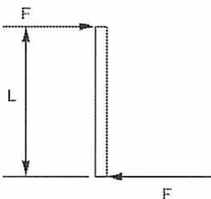
A diagram illustrating a couple. It consists of two parallel horizontal lines representing forces. The top line has an arrow pointing to the right and is labeled 'F' above it. The bottom line has an arrow pointing to the left and is labeled 'F' below it. A vertical double-headed arrow between the two lines indicates the perpendicular distance, labeled 'L'.
Figure 4
Couple
The distance \( L \) is called the arm of the couple and the resultant moment is defined as
$$ M = FL $$
An example of a couple is a tire wrench with opposite handles. Since the forces are equal but opposite, a higher turning moment can be exerted on a wheel nut as compared to a single-sided wrench.
Example 4
Similar to Fig. 4, two forces of 100 kN each are applied with a distance of 3 m between them. What is the resultant turning force?
Answer
The turning moment is found from the equation \( M = FL \)
$$ \begin{aligned} M &= FL \\ &= 100 \text{ N} \times 3 \text{ m} \\ &= 300 \text{ kNm (Ans.)} \end{aligned} $$
Objective 2
Define and calculate centroids and first and second moments of areas.
INTRODUCTION
Until now, forces that are concentrated at a point and act in a specific direction have been discussed. However, many forces act on a line (e.g. roller bearings) or an area (e.g. wind loading, beams, and fluid pressure).
CENTROIDS AND FIRST MOMENT OF AREA
With objects where size and shape matter, due to concerns with mass or volume, it is possible to locate a centre point for the area or volume. This point is the centroid. For symmetrical shapes, the centroid is easy to locate. For example, the centre of a circle is also its centroid. For a rectangle, the centroid is the point in the middle or half way between its sides.
If the shape is irregular, it is more difficult to find the centroid and a method called the first moment of areas can be used to find it. The first moment of area is defined as:
$$ \text{First moment of area} = \text{area} \times \text{distance} $$
For irregular shapes, the centroid is located by dividing the shape into areas whose centroids are known and then taking calculating the algebraic sum of the moments of its component areas.
Where mass is important, the centroid is known as the centre of mass or the centre of gravity. If the object has a consistent density, the centre of mass is at the same location as the centroid. The centroid is mainly associated with two dimensional geometric shapes, whereas the centre of mass refers to three dimensional objects with known mass.
Example 5
Find the centroid for the shape shown in Fig. 5.
![Diagram of a composite shape with dimensions. The shape is composed of three rectangles: ABCD (top), EFHG (middle), and JKLM (bottom). The total width is 20 cm. The top rectangle ABCD has a width of 15 cm and a height of 2 cm. The middle rectangle EFHG has a width of 1 cm and a height of 15 cm. The bottom rectangle JKLM has a width of 20 cm and a height of 4 cm. A vertical dashed line ML is at the bottom right corner. A horizontal dashed line AB is at the top right corner. A vertical dashed line EF is between the top and middle rectangles. A horizontal dashed line GH is between the middle and bottom rectangles. A vertical dashed line JK is at the bottom left corner. A horizontal dashed line ML is at the bottom. A vertical dashed line AB is at the top right. A horizontal dashed line EF is between the top and middle rectangles. A horizontal dashed line GH is between the middle and bottom rectangles. A vertical dashed line JK is at the bottom left. A horizontal dashed line ML is at the bottom. A vertical dashed line AB is at the top right. A horizontal dashed line EF is between the top and middle rectangles. A horizontal dashed line GH is between the middle and bottom rectangles. A vertical dashed line JK is at the bottom left. A horizontal dashed line ML is at the bottom.](a5ee5c23b6dc52ec1d724b76d5a5f58f_img.jpg)
Figure 5
Object Dimensions
Answer
Since the shape is symmetrical around the vertical axis, the centroid must lie somewhere along this line. The shape can be broken into three rectangles, ABCD, EFHG and JKLM. The centroid for each rectangle is the geometric centre of each one.
Choose a plane around which moments can be taken, for example the line ML. The distance from the centroid of each rectangle to the plane ML is:
- • 20 cm for ABCD (centre of ABCD is 1 cm. from top)
- • 11.5 cm for EFHG (centre of EFHG is 7.5 cm. from both EF and GH)
- • 2 cm for JKLM (centre of JKLM is 2 cm. from ML)
Using the equation, first moment of area = area \( \times \) distance, the moments for each area around the line ML will be found as follows:
$$ M_{ABCD} = (15 \text{ cm} \times 2 \text{ cm}) \times 20 \text{ cm} = 600 \text{ cm}^3 $$
$$ M_{EFHG} = (15 \text{ cm} \times 1 \text{ cm}) \times 11.5 \text{ cm} = 172.5 \text{ cm}^3 $$
$$ M_{JKLM} = (20 \text{ cm} \times 4 \text{ cm}) \times 2 \text{ cm} = 160 \text{ cm}^3 $$
$$ \text{Total moment} = 932.5 \text{ cm}^3 $$
Calculating the moment of the centroid where \( y \) is the distance from the centroid to the line ML:
$$ \begin{aligned} \text{Moment of total area about ML} &= (15 \text{ cm} \times 2 \text{ cm}) + (15 \text{ cm} \times 1 \text{ cm}) + (20 \text{ cm} \times 4 \text{ cm}) \times y \text{ cm} \\ &= (30 + 15 + 80) \text{ cm}^2 \times y \text{ cm} \\ &= 125 y \text{ cm}^3 \end{aligned} $$
Since the two moments must be equal in order to maintain equilibrium, the distance from ML to the centroid is:
$$ \begin{aligned} 125 y \text{ cm}^3 &= 932.5 \text{ cm}^3 \\ y &= 7.46 \text{ cm (Ans.)} \end{aligned} $$
SECOND MOMENT OF AREA
For certain calculations, it is necessary to determine a second moment of area which includes the distance squared multiplied by the area or
$$ \text{Second moment of area} = \text{area} \times \text{distance}^2 $$
One application is in the design of shafts and beams to find their resistance to bending, and to torsion or twisting force. Torsion refers to the twisting stress on a shaft that an applied torque tends to create. When applied to angular motion, or rotation, the second moment of area is called the moment of inertia and the distance is called the radius of gyration.
Following are some examples of the second moment of area for a variety of shapes. The second moment of area is usually referred to by the letter \( I \) .
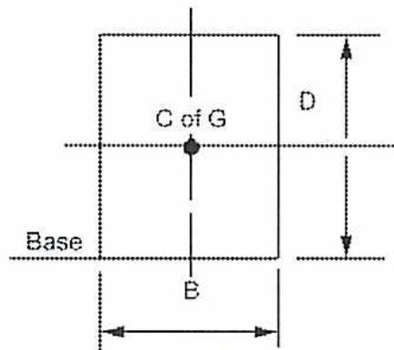
Figure 6
Solid Rectangle
The second moment of area or moment of inertia for a solid rectangle (Fig. 6) with respect to the centre of the rectangle is equal to \( I \) in the following equation:
$$ I_{cg} = \frac{\text{distance}^2 \times \text{area}}{12} $$
$$ I_{cg} = \frac{D^2 \times BD}{12} $$
$$ I_{cg} = \frac{BD^3}{12} $$
With respect to the base, it becomes
$$ I_{base} = \frac{BD^3}{3} $$
Note: the denominations, in the above equations, are values derived using calculus.
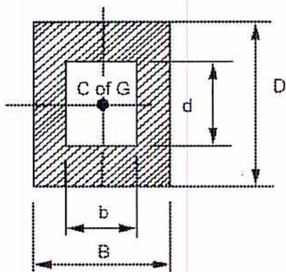
Figure 7
Hollow Rectangle
The second moment of area or moment of inertia for a hollow rectangle (Fig. 7) with respect to the centre of the rectangle is:
$$ I_{cg} = \frac{BD^3 - bd^3}{12} $$
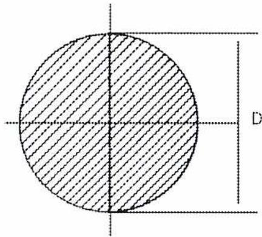
Figure 8
Solid Circle
The second moment of area or moment of inertia for a solid circle (Fig. 8) with respect to the centre of the circle is:
$$ I_{cg} = \frac{\pi D^4}{64} $$
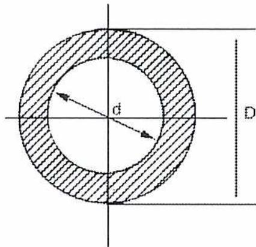
Figure 9
Hollow Circle
The second moment of area or moment of inertia for a hollow circle (Fig. 9) with respect to the centre of the circle is
$$ I_{cg} = \frac{\pi(D^4 - d^4)}{64} $$
Objective 3
Define and calculate the different types of stress.
TYPES OF LOAD
When external forces are applied to objects, there is an internal resistance set up in the material that opposes the external force. This resistance to the applied force is called stress . The applied external forces are referred to as loads , and different types of loads will cause different stresses to be generated in the object upon which the load is acting. Loads are classified according the length of time they are applied, the area of application, and the type of stress they produce.
Loads can be classified according to the time period over which they are applied:
- 1. Static load: Load that is applied to an object very slowly and held at a constant magnitude so that equilibrium is reached. An example is the load on a building structure due to the mass of the building materials.
- 2. Sustained load: Load that is constant over a long period of time, such as the weight of a mass stored in a structure. The effects are usually the same as a static load except where the resistance to failure may differ due to specific stress or temperature conditions during loading.
- 3. Impact load or shock load: Load that is applied suddenly, in a very short time period. The load is dependent on both the mass and the velocity of the object producing the impact force. This may cause vibration which has to dampen before equilibrium is reached.
- 4. Repeated load or cyclic load: Load which increases and decreases in magnitude many times over specific periods of time, such as the opening and closing of engine valves.
Loads may also differ according to the area of application:
- 1. Concentrated load: Load that is applied to a small area relative to the total area, such as the wheel of a car on a road.
- 2. Distributed load: Load that is spread along a length or area, such as the weight of a beam.
Loads may be classified according to the type of stress they produce:
- 1. Axial load: The force acts through the centroid of the object so that no bending occurs. It produces uniform tension or compression across the affected area.
- 2. Shear load: The forces are parallel but not in the same plane, so that the stress varies across the cross-sectional area.
- 3. Torsional load: This type of load applies an angular moment or a twisting force to a beam or shaft.
- 4. Bending load This occurs when a force is applied perpendicular to the axis of an object, such as the wind on a tower or loads on structural members.
- 5. Thermal load: This occurs when a change in temperature creates thermal expansion or contraction within an object that is physically constrained from moving freely.
- 6. Combined load: This is caused by more than one type of the above loads is applied to an object.
STRESS
The result of a load applied to an area is called stress. Stress is the internal resistance that results from the application of an external load. Stress is represented by the Greek symbol \( \sigma \) , or sigma.
$$ \text{Direct stress} = \frac{\text{load}}{\text{area}} $$
$$ \text{Direct Stress} = \frac{P}{A} $$
The units of stress are \( \text{N/m}^2 \) or Pascals (Pa).
Normally, stress calculations assume a constant cross-sectional area throughout the material being stressed. Since the amount of stress generated is proportional to the cross-sectional area across which the load is distributed, it is very important to ensure that this assumption of uniform cross-sectional area is correct. Any reduction in cross-sectional area will cause an increase in the stress levels that are generated, and this could lead to material failure if they are not allowed for. When the area is not constant, the stress changes across the area produce regions of increased local stress or stress concentrations. These require specialized mathematical analysis and are often the cause of material failure of an object such as fracture or rupture.
TENSION AND COMPRESSION
Tension and compression are illustrated in Fig. 10. When forces are in opposite directions in the same plane, there is tension in the object. It is said to be “in tension” and it is under tensile stress. When the forces are directed towards each other, the object is in compression and it is under compressive stress. In both cases, the distribution of stress is uniform.
![Figure 10: Tensile and Compressive Stresses. (a) Tension: A rectangular block is shown with a cross-sectional area A. Two arrows labeled 'Force F' point outwards from the ends of the block. Inside the block, five small arrows point to the right, representing the internal stress. A label 'Stress σ' points to these internal arrows. (b) Compression: A rectangular block is shown with a cross-sectional area A. Two arrows labeled 'Force F' point inwards towards the ends of the block. Inside the block, five small arrows point to the right, representing the internal stress. A label 'Stress σ' points to these internal arrows.](93afce28d7dec5b2202789b31b4ef8ab_img.jpg)
(a) Tension
(b) Compression
Figure 10
Tensile and Compressive Stresses
Example 6
A circular column with a diameter of 30 cm carries a compressive load of 100 kN. What is the stress on the column?
Answer
The area of the column is:
$$ \begin{aligned} A &= \pi r^2 \\ &= \pi(0.15 \text{ m})^2 \\ &= 0.0707 \text{ m}^2 \end{aligned} $$
The stress as per the equation \( \text{Direct stress} = \frac{P}{A} \) is:
$$ \begin{aligned}\text{Direct stress} &= \frac{P}{A} \\ &= \frac{100 \text{ kN}}{0.0707 \text{ m}^2} \\ &= 1414.4 \text{ kPa (Ans.)}\end{aligned} $$
Example 7
A tie bar of 5 cm diameter is used in a structural framework. If the maximum tensile stress is not to exceed 60 000 kPa, what is the maximum allowable load?
Answer
The area of the tie is
$$ \begin{aligned}A &= \pi r^2 \\ &= \pi(0.025 \text{ m})^2 \\ &= 0.0020 \text{ m}^2\end{aligned} $$
Rearranging the equation \( \text{Direct stress} = \frac{P}{A} \) , the maximum allowable force is:
$$ \begin{aligned}\text{Direct stress} &= \frac{P}{A} \\ P &= (\text{Direct stress})A \\ &= 60 \, 000 \text{ kN/m}^2 \times 0.0020 \text{ m}^2 \\ &= 120.00 \text{ kN (Ans.)}\end{aligned} $$
SHEAR STRESS
Shear stress is produced by equal and opposite parallel forces (not in line with each other) that tend to make one part of the material slide over the other part. The stresses occur on plane sections that are parallel to the direction of the applied force, as shown in Fig. 11.
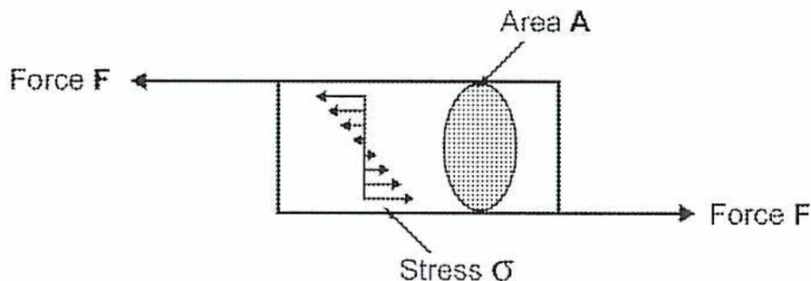
Figure 11
Shear Stress
Fig. 12 shows shear stress in a rivet. Because the stress is applied on one plane of the rivet, it is called single shear stress. The shear stress is calculated by dividing the force by the area of the rivet.
$$ \text{Shear stress } (\tau) = \frac{\text{force}}{\text{area under shear}} $$
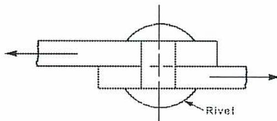
Figure 12
Single Shear Stress
In the example shown in Fig. 13, the bolt experiences a shear force in two locations. The result is called double shear. Because the force is absorbed across two areas, the stress is calculated by dividing the force by twice the area of the bolt and the stress is thereby reduced in half.
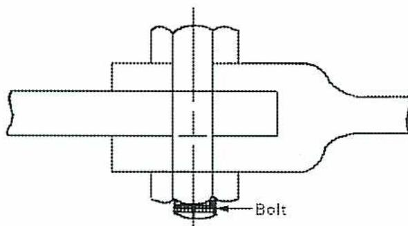
Figure 13
Single Shear Stress
Note that the rivet and bolt in the above examples also experience bending and compressive stresses. Pure shear stress occurs only in torsion, or angular stress, which is covered in a later Objective.
Example 8
A bolt with a diameter of 1.5 cm connects two members so that the bolt is in double shear. If the load is 50 kN, what is the shear stress in the bolt?
Answer
The area of the bolt is:
$$ \begin{aligned} A &= \pi r^2 \\ &= \pi (0.0075 \text{ m})^2 \\ &= 0.0002 \text{ m}^2 \end{aligned} $$
The area resisting the force is double the area of the bolt so that the shear stress is:
$$ \begin{aligned} \text{Shear stress } (\tau) &= \frac{\text{force}}{\text{area under shear}} \\ &= \frac{50 \text{ kN}}{2 \times 0.0002 \text{ m}^2} \\ &= 125\,000 \text{ kPa or } 125 \text{ MPa (Ans.)} \end{aligned} $$
Objective 4
Define strain, modulus of elasticity, Poisson's ratio and perform calculations.
STRAIN
When a force is applied to an object, the dimensions change. The change in length, relative to the original length, is called linear or direct strain . Linear strain is calculated using the equation:
$$ \text{Direct strain} = \frac{\text{extension}}{\text{original length}} $$
$$ \text{Direct strain}(\varepsilon) = \frac{\Delta l}{L} $$
The units cancel each other out in the equation, so strain has no units of measure.
Shear strain refers to deformation of a body due to shear stress. It is measured in terms of the angle through which the deformation occurs.
Example 9
A column 10 m long is subjected to a load which causes its length to decrease 5 mm. What is the strain in the column?
Answer
From the equation \( \text{Direct strain}(\varepsilon) = \frac{\Delta l}{L} \) , the strain is
$$ \begin{aligned}\text{Direct strain}(\varepsilon) &= \frac{\Delta l}{L} \\ &= \frac{0.005 \text{ m}}{10 \text{ m}} \\ &= 0.0005 \text{ (Ans.)}\end{aligned} $$
STRESS AND STRAIN
As the stress in a material increases, there is also an increase in strain. Hooke's Law states that, within the elastic region , the strain produced will be directly proportional to the stress that produces it (see Fig. 14). There are limits under which Hooke's Law applies and these limits are distinct to the material being tested. Tests have shown that, as the level of stress increases, the material will pass through a number of stages of strain before it finally fails.
In the first stage, the stress causes the material to deform only while an external force continues to produce the stress. Once the force is removed, the material returns to its original shape. The strain caused in this stage or range is called elastic strain . In this region, the relationship between stress and strain follows Hooke's Law.
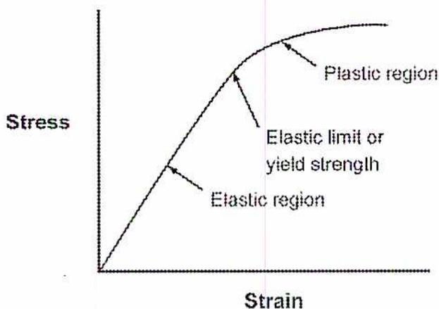
Figure 14
Typical Stress vs. Strain Curve
The maximum elastic strain that a material can handle is called the elastic limit or yield strength of the material, and any additional force above this limit will cause permanent deformation. Strain in this range is called plastic strain , and it will cause plastic deformation of the material. Once the material is strained into this plastic region , it will not return to its original shape even after the force causing the stress is removed. Once the material has moved into the plastic deformation range, its cross sectional area will be reduced. At this point, the stress will become concentrated and the material will quickly fail if more force is applied and the ultimate stress limit is exceeded. A material is considered to have completely failed once it reaches the ultimate stress limit.
FACTOR OF SAFETY
In engineering design it is standard to build in a safety margin to account for unexpected factors and variations. For loads, the factor of safety is the ratio of the elastic limit and the maximum expected working stress:
$$ \text{Factor of safety} = \frac{\text{Elastic Limit}}{\text{Maximum Working Stress}} \text{ or } \frac{\text{Ultimate stress}}{\text{Allowable working stress}} $$
The maximum allowable working stress, and thus the factor of safety, depends on the following variables:
- • Nature of the load (i.e. gradually applied, sudden impact, or repeated loading)
- • Value of the maximum load
- • Reliability of the material selected
- • Uniformity of the material in question
- • Severity of the consequences of failure
- • Accuracy of the test data
MODULUS OF ELASTICITY
In the elastic region, the ratio of stress vs. strain is a specific constant for each individual material and tests has determined this constant for various materials. This ratio is called the Modulus of Elasticity or Young's Modulus and it is used as a measure of stiffness for materials.
$$ \text{Modulus of elasticity } E = \frac{\text{direct stress}}{\text{direct strain}} $$
$$ E = \frac{P/A}{\Delta l/L} $$
$$ \text{Modulus of elasticity } E = \frac{PL}{A\Delta l} $$
Since \( \varepsilon \) is a pure number without units, the units for \( \varepsilon \) are the same as for stress, that is, Pascals. It is commonly measured in GPa (gigapascals or \( 10^9 \) pascals).
In general, the values of Young's Moduli are the same for tension and compression although exceptions do occur.
For shear stresses, the Modulus of Elasticity is called the Modulus of Rigidity, \( G \) , and is defined as the ratio of shear stress to shear strain or
$$ \text{Modulus of rigidity } (G) = \frac{\text{shear stress } (\tau)}{\text{shear strain } (\gamma)} $$
$$ G = \frac{\tau}{\gamma} $$
Some typical values for the modulus of elasticity and rigidity are compared in Table 1. Note that the larger values indicate greater stiffness and less deformation for a given stress.
Table 1
Typical Values for Modulus of Elasticity and Rigidity
| Material | Modulus of Elasticity (GPa) | Modulus of Rigidity (GPa) |
|---|---|---|
| Diamond | 1000 | |
| Tungsten carbide | 450-650 | |
| Low alloy steel | 200-207 | 79 |
| Stainless steel | 190-200 | 73 |
| Silicon | 107 | |
| Aluminum | 69 | 26 |
| Nylon | 2-4 | |
| Rubber | 0.01-0.1 |
Example 10
A steel bar with a diameter of 5 cm and a length of 3 m is subjected to a tensile load of 200 kN. If the elastic limit is 600 MPa and \( E \) is 200 GPa, calculate the stress and strain in the bar, the increase in its length and the factor of safety.
Answer
The area of the bar is
$$ \begin{aligned} A &= \pi r^2 \\ &= \pi (0.025 \text{ m})^2 \\ &= 0.002 \text{ m}^2 \end{aligned} $$
The stress is:
$$ \begin{aligned} \text{Direct stress} &= \frac{P}{A} \\ &= \frac{200 \text{ kN}}{0.002 \text{ m}^2} \\ &= \mathbf{100.00 \text{ MPa}} \text{ (Ans.)} \end{aligned} $$
The strain, \( \text{Direct strain}(\epsilon) = \frac{\Delta l}{L} \) , is:
$$ \begin{aligned} \text{Direct strain}(\varepsilon) &= \frac{\Delta l}{L} \\ &= \frac{100.00 \times 10^6 \text{ Pa}}{200 \times 10^9 \text{ Pa}} \\ &= \mathbf{0.0005} \text{ (Ans.)} \end{aligned} $$
The increase in length \( \text{Direct strain}(\varepsilon) = \frac{\Delta l}{L} \) is:
$$ \begin{aligned} \varepsilon &= \frac{\Delta l}{L} \\ \Delta l &= \varepsilon L \\ &= .0005 \times 3 \text{ m} \\ &= 0.0015 \text{ m} \\ &= \mathbf{1.50 \text{ mm}} \text{ (Ans.)} \end{aligned} $$
The factor of safety \( \text{Factor of safety} = \frac{\text{Elastic limit}}{\text{Maximum working stress}} \) is:
$$ \begin{aligned} \text{Factor of safety} &= \frac{\text{Elastic limit}}{\text{Maximum working stress}} \\ &= \frac{600 \text{ mPa}}{100.00 \text{ mPa}} \\ &= \mathbf{6.0} \text{ (Ans.)} \end{aligned} $$
POISSON'S RATIO
When a bar is stretched, there is not only an increase in its axial length but also a corresponding decrease in its lateral width. A tensile stress acting in any direction on an object produces a tensile strain in this direction and also produces a compressive strain in every direction perpendicular to the first. Compressive stress on an object causes compressive strain in its own direction, and tensile strain in every lateral direction. The ratio between the lateral or perpendicular strain and the axial or longitudinal strain is called Poisson's ratio or \( \mu \) (mu) and is defined as
$$ \text{Poisson's ratio } (\mu) = \frac{\text{lateral strain}}{\text{axial strain}} $$
For most metals, Poisson's ratio is between 0.25 and 0.35.
Example 11
A 5 cm square steel bar with a length of 1.2 m is subjected to a tensile load of 285 kN. If \( E \) is 210 GPa and \( \mu \) is 0.3, calculate the change in dimensions of the bar.
Answer
The area of the bar is:
$$ \begin{aligned} A &= 5 \text{ cm} \times 5 \text{ cm} \\ &= 25 \text{ cm}^2 \\ A &= 0.0025 \text{ m}^2 \end{aligned} $$
The stress Direct stress \( = \frac{P}{A} \) is:
$$ \begin{aligned} \text{Direct stress} &= \frac{P}{A} \\ &= \frac{285 \text{ kN}}{0.0025 \text{ m}^2} \\ &= 114\,000 \text{ kPa} \\ &= 114 \text{ MPa} \end{aligned} $$
The strain Direct strain \( (\varepsilon) = \frac{\Delta l}{L} \) is:
$$ \begin{aligned} \text{Direct strain}(\varepsilon) &= \frac{\Delta l}{L} \\ &= \frac{114 \times 10^6 \text{ Pa}}{210 \times 10^9 \text{ Pa}} \\ &= 0.0005 \end{aligned} $$
The increase in length Direct strain \( (\varepsilon) = \frac{\Delta l}{L} \) is:
$$ \begin{aligned} \varepsilon &= \frac{\Delta L}{L} \\ \text{Direct strain}(\varepsilon) &= \frac{\Delta l}{L} \\ \Delta L &= \varepsilon L \\ &= 0.0005 \times 1.2 \text{ m} \\ &= 0.0006 \text{ m} \\ &= 0.6 \text{ mm} \end{aligned} $$
The axial strain Poisson's ratio ( \( \mu \) ) = \( \frac{\text{lateral strain}}{\text{axial strain}} \) is:
$$ \begin{aligned}\text{Poisson's ratio } (\mu) &= \frac{\text{lateral strain}}{\text{axial strain}} \\ \text{lateral strain} &= \text{axial strain} \times \mu \\ &= .0005 \times 0.3 \\ &= 0.00015\end{aligned} $$
The decrease in width Direct strain ( \( \varepsilon \) ) = \( \frac{\Delta l}{L} \) is:
$$ \begin{aligned}\varepsilon &= \frac{\Delta l}{L} \\ \Delta l &= \varepsilon L \\ &= 0.00015 \times 5 \text{ cm} \\ &= 0.00075 \text{ cm}\end{aligned} $$
The new dimensions of the bar are:
$$ \begin{aligned}\text{New length} &= 1200 \text{ mm} + 0.6 \text{ mm} \\ &= \mathbf{1200.6 \text{ mm}} \text{ (Ans.)} \\ \text{New width} &= 5 \text{ cm} - 0.00075 \text{ cm} \\ &= 4.9992 \text{ cm} \\ &= \mathbf{49.992 \text{ mm}} \text{ (Ans.)}\end{aligned} $$
Objective 5
Describe the thermal expansion of bars, including reactions, under conditions of restricted expansion and reactions of bars composed of dissimilar metals.
THERMAL EXPANSION
When metals are heated or cooled they expand or contract. The amount of expansion or contraction is dependent on the length of the material and the coefficient of thermal (also known as linear) expansion \( \alpha \) for that particular material. The coefficient of linear expansion of a material is the longitudinal expansion for each unit of length for each degree of increase in temperature. It is measured in strain per \( ^{\circ}\text{C} \) . The coefficient of linear expansion is constant for a wide range of temperatures.
The strain due to thermal effects is determined by the equation
$$ \varepsilon = \alpha \times (T_2 - T_1) $$
For a bar of length \( L \) , the change in length will be
$$ \text{Change in length } (\Delta l) = L \alpha (T_2 - T_1) $$
\( L \) = original length
\( \alpha \) = coefficient of linear expansion
\( (T_2 - T_1) \) = rise in temperature
If an object is secured or fixed in a certain position, then its ability to move or expand is restricted or eliminated completely. If this object is then subjected to an increase or decrease in temperature, stresses will be developed in the material because its expansion or contraction is constrained. These thermal stresses are cumulative with any other stresses that the material may be subjected to when evaluating the material's ability to handle loads.
Example 12
A copper bar is 2.5 m long at \( 16^{\circ}\text{C} \) . The coefficient of thermal expansion is \( 18 \times 10^{-6} \) per \( ^{\circ}\text{C} \) and \( E \) is 110 GPa. If the temperature increases to \( 27^{\circ}\text{C} \) , what is the thermal strain and the increase in length if the bar's movement is not restricted? If the bar is fixed at both ends, what is the increase in the stress?
Answer
The thermal strain is found from \( \varepsilon = \alpha \times (T_2 - T_1) \) :
$$ \begin{aligned}\varepsilon &= \alpha \times (T_2 - T_1) \\ &= 18 \times 10^{-6} / ^\circ\text{C} \times (27 - 16) ^\circ\text{C} \\ &= 0.0002\end{aligned} $$
The increase in length using equation \( \text{Direct strain}(\varepsilon) = \frac{\Delta l}{L} \) is:
$$ \begin{aligned}\text{Direct strain}(\varepsilon) &= \frac{\Delta l}{L} \\ \Delta l &= \varepsilon L \\ &= 0.0002 \times 2.5 \text{ m} \\ &= 0.0005 \text{ m} \\ &= 0.5 \text{ mm}\end{aligned} $$
The stress \( E = \frac{\text{direct stress}}{\text{direct strain}} \) is:
$$ \begin{aligned}E &= \frac{\text{direct stress}}{\text{direct strain}} \\ \text{direct stress} &= E \times \text{direct strain} \\ &= 110 \text{ GPa} \times 0.0002 \text{ m} \\ &= 0.022 \text{ GPa} \\ &= 22.0 \text{ MPa (Ans.)}\end{aligned} $$
THERMAL EXPANSION OF COMPOSITE BARS
A composite bar is one that is composed of different metals such as the one shown in Fig. 15. Because brass has a higher coefficient of thermal expansion than steel, it is restricted by the steel and expands less than when it is heated on its own. Fig. 15 shows that the brass expands only by length \( c \) instead of length \( a \) . The steel is forced by the brass to expand more than when it is heated on its own, that is, it expands to length \( c \) instead of length \( b \) .
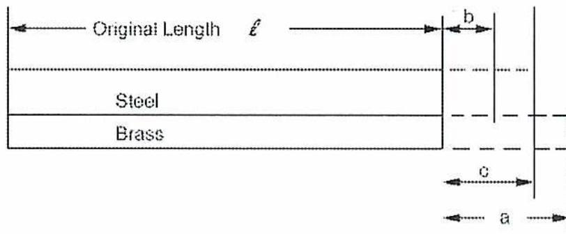
The diagram shows a composite bar made of two materials: Steel (top) and Brass (bottom). Both bars have an initial length labeled 'l'. When the temperature changes, the brass bar expands by an amount 'a' and the steel bar expands by an amount 'b'. The total expansion of the composite bar is indicated by 'c'.
Figure 15
Composite Bar
The change in length in the brass bar, if unrestricted, is:
$$ \text{Change in length } (\Delta l) = L \alpha (T_2 - T_1) $$
Let this value be represented by “a”:
$$ a = L \alpha_b (T_2 - T_1) $$
Therefore:
$$ \alpha_b = \frac{a}{L \times (T_2 - T_1)} $$
and the strain \( \varepsilon = \alpha \times \Delta T \) is:
$$ \varepsilon = \alpha \times (T_2 - T_1) $$
$$ \varepsilon_b = \alpha_b \times (T_2 - T_1) $$
$$ \varepsilon_b = \frac{a \times (T_2 - T_1)}{l \times (T_2 - T_1)} $$
$$ \varepsilon_b = \frac{a}{l} $$
The normal change in length in the steel bar, if unrestricted, is:
$$ \text{Change in length } (\Delta l) = L \alpha (T_2 - T_1) $$
Let this value be represented by “b”:
$$ b = L \alpha_s (T_2 - T_1) $$
Therefore:
$$ \alpha_s = \frac{b}{L \times (T_2 - T_1)} $$
and the strain \( \epsilon = \alpha \times \Delta T \) is:
$$ \begin{aligned}\epsilon &= \alpha \times (T_2 - T_1) \\ \epsilon_s &= \alpha_s \times (T_2 - T_1) \\ \epsilon_s &= \frac{b \times (T_2 - T_1)}{l \times (T_2 - T_1)} \\ \epsilon_s &= \frac{b}{l}\end{aligned} $$
Let “c” represent the actual expansion of the composite bar. The difference in expansion for the brass portion will be, \( a - c \) , which introduces a compressive stress in that portion of the bar. The difference in expansion for the steel portion, \( c - b \) , causes a tensile stress.
The difference in the free expansion, \( a - b \) , is derived by substituting for \( a \) and \( b \) in the following equation:
$$ \begin{aligned}a - b &= [a_b \times (T_2 - T_1) \times L] - [a_s \times (T_2 - T_1) \times L] \\ \frac{a - b}{L} &= [a_b \times (T_2 - T_1)] - [a_s \times (T_2 - T_1)] \\ \frac{a - b}{L} &= \epsilon_b - \epsilon_s\end{aligned} $$
Note; \( \epsilon_b \) has a negative value because the expansion of the brass is restricted. Therefore, to determine the absolute value of \( \frac{a - b}{L} \) :
$$ \begin{aligned}\frac{a - b}{L} &= -\epsilon_b - \epsilon_s \\ \frac{a - b}{L} &= \epsilon_b + \epsilon_s\end{aligned} $$
This gives the relationship:
Difference in free expansion per unit length = strain in brass + strain in steel
The strains can be written in terms of stress and the modulus of elasticity, as follows:
$$ \begin{aligned}\epsilon_b + \epsilon_s &= (\alpha_b - \alpha_s) \times (T_2 - T_1) \\ \frac{\sigma_b}{E_b} + \frac{\sigma_s}{E_s} &= (\alpha_b - \alpha_s) \times (T_2 - T_1)\end{aligned} $$
Because the force in each part of the bar must be equal, the stresses are related by the equation:
$$ \sigma_s \times A_s = \sigma_b \times A_b $$ $$ \sigma_b = \frac{\sigma_s \times A_s}{A_b} $$
Substituting this in \( \sigma_b = \frac{\sigma_s \times A_s}{A_b} \) , the stress in the steel bar is:
$$ \frac{\sigma_s A_s}{E_b A_b} + \frac{\sigma_s}{E_s} = (\alpha_b - \alpha_s) \times (T_2 - T_1) $$
$$ \sigma_s = \frac{(\alpha_b - \alpha_s) \times (T_2 - T_1)}{\frac{A_s}{E_b A_b} + \frac{1}{E_s}} $$
Example 13
A steel bar with a cross-sectional area of 19 cm 2 is fastened securely to a brass bar with a cross-sectional area of 13 cm 2 . The temperature of the composite assembly is raised from 100°C to 156°C. Calculate the stress in each portion of the bar given that:
Coefficient of thermal expansion for steel = \( 12 \times 10^{-6} \) per °C
Coefficient of thermal expansion for brass = \( 20 \times 10^{-6} \) per °C
Modulus of elasticity for steel = 210 GPa
Modulus of elasticity for brass = 91 GPa
Answer
The stress in the steel portion \( \sigma_s = \frac{(\alpha_b - \alpha_s) \times (T_2 - T_1)}{\frac{A_s}{E_b A_b} + \frac{1}{E_s}} \) is:
$$ \begin{aligned} \sigma_s &= \frac{(\alpha_b - \alpha_s) \times (T_2 - T_1)}{\frac{A_s}{E_b A_b} + \frac{1}{E_s}} \\ &= \frac{(20 \times 10^{-6} / ^\circ\text{C} - 12 \times 10^{-6} / ^\circ\text{C}) \times (156^\circ\text{C} - 100^\circ\text{C})}{\frac{19 \text{ cm}^2}{91 \times 10^9 \text{ Pa} \times 13 \text{ cm}^2} + \frac{1}{210 \times 10^9 \text{ Pa}}} \\ &= \frac{8 \times 10^{-6} \times 56}{0.0161 \times 10^{-9} / \text{Pa} + 0.0048 \times 10^{-9} / \text{Pa}} \\ &= \frac{448 \times 10^3 \text{ Pa}}{0.0209} \\ &= 21,435 \text{ kPa (Ans.)} \end{aligned} $$
The stress in the brass portion is from \( \sigma_b = \frac{\sigma_s \times A_s}{A_b} \) :
$$ \begin{aligned} \sigma_b &= \frac{\sigma_s \times A_s}{A_b} \\ &= \frac{21435 \text{ kPa} \times 19 \text{ cm}^2}{13 \text{ cm}^2} \\ &= 31,328 \text{ kPa (Ans.)} \end{aligned} $$
Objective 6
Define and calculate shear forces and bending moments for simply supported beams and cantilevers.
LOADS ON BEAMS
A beam is a structural member designed primarily to support loads that are perpendicular to the longitudinal axis of the beam. Types of beams are distinguished by the method which they are supported. Simply supported beams, (Fig. 16), have a single support at each end of the beam.
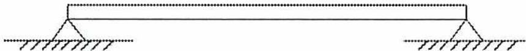
A horizontal beam is shown with two triangular supports at its ends. Each support is placed on a hatched horizontal line representing the ground, indicating that the beam is supported at both ends.
Figure 16
Simple Supported Beam
Cantilever beams (Fig. 17.) are secured or fixed firmly at one end only.
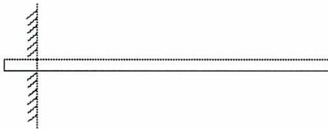
A horizontal beam is shown with one end fixed into a vertical hatched wall, while the other end is free, illustrating a cantilever beam.
Figure 17
Cantilever Beam
There are two types of loads that will be evaluated in this section of the module:
- • Concentrated
- • Uniformly distributed
Concentrated Loads
Concentrated loads (Fig. 18) are loads that are concentrated at a single point or location on the beam.
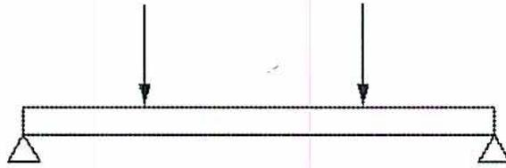
Figure 18
Beam with Concentrated Loads
Uniformly Distributed Loads
Uniformly distributed loads (see Fig. 19) are spread uniformly across a section of the beam or the entire length.
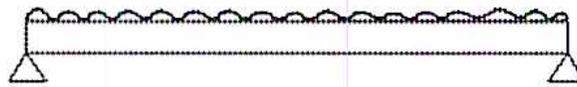
Figure 19
Beam with Uniformly Distributed Load
The loads on a beam will result in both of the following:
- • Shear forces
- • Bending moments
SHEAR FORCES
Shear forces tend to cause the beam to shear in a vertical direction. If the direction is the one shown in Fig. 20(a) or in a clockwise direction relative to the applied forces, it is called positive shear . If the direction is the one shown in Fig. 20(b) or in an anticlockwise direction relative to the applied forces, it is negative shear .
![Two diagrams, (a) and (b), illustrating shear forces on a beam element. (a) shows a beam element with a downward point load in the center; the left part has an upward arrow on its left end and a downward arrow on its right end, while the right part has a downward arrow on its left end and an upward arrow on its right end. (b) shows a similar beam element with a downward point load, but the shear force directions are reversed: the left part has a downward arrow on its left end and an upward arrow on its right end, while the right part has an upward arrow on its left end and a downward arrow on its right end.](76b4e08956dd2053370d2f8e9dd6d2a8_img.jpg)
Figure 20
Shear Forces
Fig. 21 illustrates the change in shear forces across a simply supported beam with two point loads. Reviewing the shear forces on the beam and starting on the left hand side,
the shear force is 4600 N and is positive until it reaches the 4000 N load. Because the 4000 N load acts in the opposite direction, the shear force is reduced to 600 N but is still positive. At the next load of 2000 N, the shear force is again reduced to -1400 N and is now negative. The shear force remains at -1400 N between the 2000 N load and the right hand side of the beam, where it is restored to zero shear force by the 1400 N force at the support. Diagrams such as the one shown in Figure 21 are the clearest way to show the shear forces.
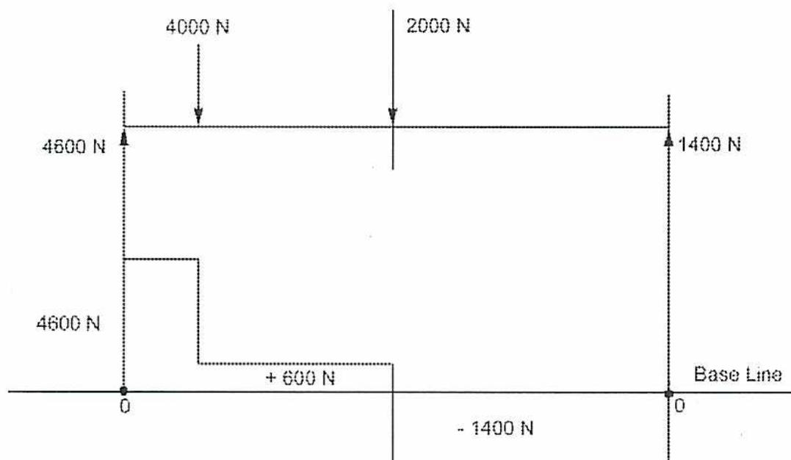
The figure shows a shear force diagram for a beam. The top part is a beam with two downward point loads: 4000 N and 2000 N. The bottom part is the corresponding shear force diagram. The diagram starts at +4600 N at the left end (marked 0), remains constant until the first load, then drops by 4000 N to +600 N. It remains constant until the second load, then drops by 2000 N to -1400 N. It remains constant until the right end (marked 0), where it returns to zero due to an upward reaction force of 1400 N. The baseline is indicated at the right end.
Figure 21
Shear Forces on a Simple Beam
BENDING MOMENTS
Bending force is caused by moments created on the beam by applied forces. The use of moments to determine forces was covered in Objective 1. In static equilibrium, clockwise moments must equal anticlockwise moments and vertical forces must equal the downward forces.
The stress profile produced by a bending force is shown in Fig. 22. If the forces cause the beam to deflect downward, the top surface of the beam experiences compression and the bottom of the beam experiences tension. The bending moment is positive when the moments move in a counter-clockwise direction. Bending moments are negative when moving in a clockwise direction.
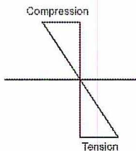
Figure 22
Stress Profile due to Bending Forces
To evaluate the bending moments, use the dimensions between the forces, as shown in Fig. 23.
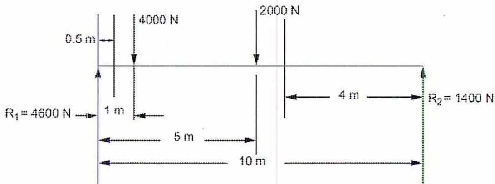
Figure 23
Dimensions for a Simple Beam
The resultant bending moments are shown in Fig. 24. At the point 0.5 m from the left hand side, either the forces to the left or to the right side of this point can be used because they are equal for equilibrium. Since there is only one force on the left side of the beam, it is easier to calculate:
$$ \begin{aligned} \text{Bending moment at } 0.5 \text{ m from } R_1 &= 4600 \text{ N} \times 0.5 \text{ m} \\ &= 2300 \text{ Nm} \end{aligned} $$
The remaining moments are:
$$ \begin{aligned}\text{Bending moment at 1 m from } R_1 &= 4600 \text{ N} \times 1 \text{ m} \\ &= 4600 \text{ Nm}\end{aligned} $$
$$ \begin{aligned}\text{Bending moment at 5 m from } R_1 &= (4600 \text{ N} \times 5 \text{ m}) - (4000 \text{ N} \times 4 \text{ m}) \\ &= 7000 \text{ Nm}\end{aligned} $$
$$ \begin{aligned}\text{Bending moment at 6 m from } R_1 &= (4600 \text{ N} \times 6 \text{ m}) - (4000 \text{ N} \times 5 \text{ m}) - (2000 \text{ N} \times 1 \text{ m}) \\ &= 5600 \text{ Nm}\end{aligned} $$
To check the results, take the moments to the right of the point 4 m from \( R_2 \) :
$$ \begin{aligned}\text{Bending moment at 4 m from } R_2 &= 1400 \text{ N} \times 4 \text{ m} \\ &= 5600 \text{ Nm}\end{aligned} $$
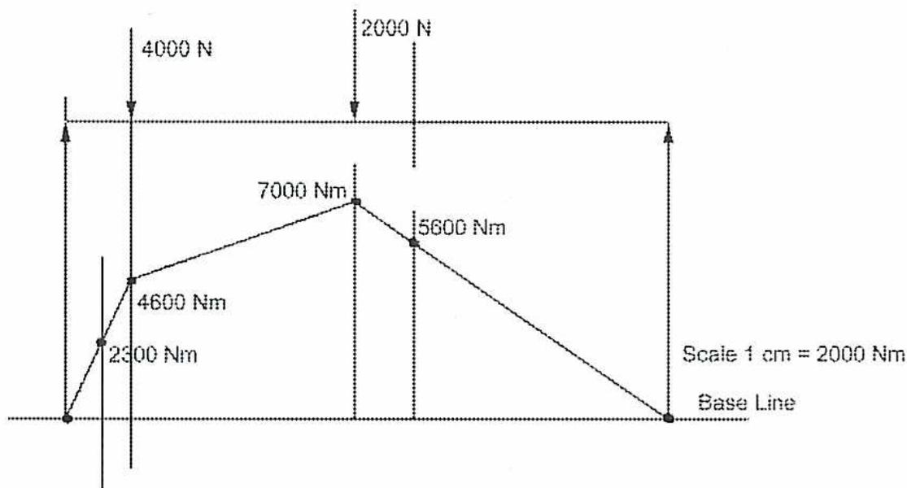
The diagram shows a bending moment diagram for a beam. The horizontal axis is labeled 'Base Line'. The vertical axis represents the bending moment in Nm. The diagram consists of straight line segments connecting the following points: (0, 0), (1, 2300), (2, 4600), (5, 7000), (6, 5600), and (10, 0). Above the beam, there are two downward point loads: 4000 N at 2 m from the left end and 2000 N at 5 m from the left end. A scale bar indicates 'Scale 1 cm = 2000 Nm'.
Figure 24
Bending Forces on a Simple Beam
It is common to show both the shear forces and the bending moments on the same diagram, as shown in Fig. 25. Note that the maximum bending moment occurs at the same location where the shear force crosses the axis and is zero.
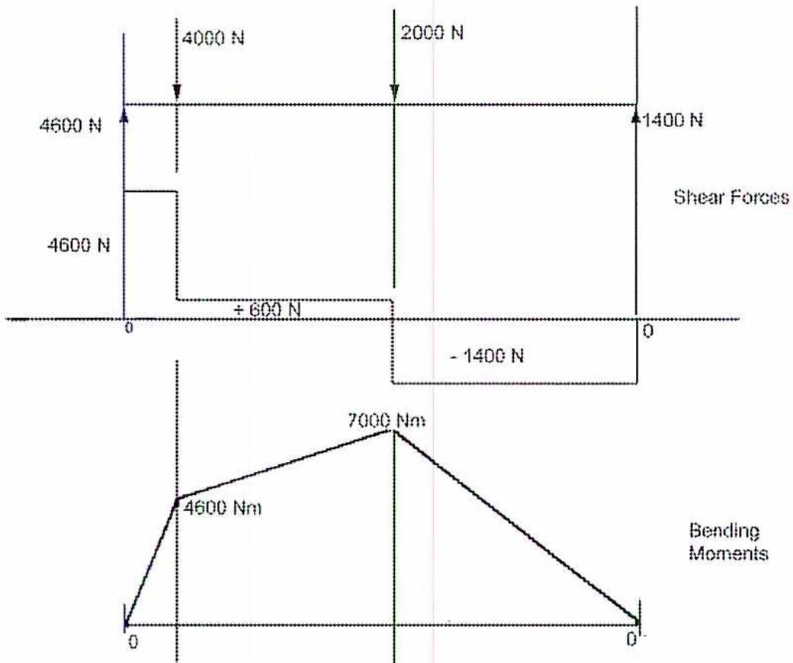
The figure consists of two vertically aligned diagrams. The top diagram, labeled "Shear Forces", shows the shear force distribution along the beam. It starts at a reaction of 4600 N at the left support (0), remains constant until a point load of 4000 N is applied, dropping the shear to +600 N. It remains at +600 N until a 2000 N point load is applied, dropping the shear to -1400 N. It remains at -1400 N until the right support, where a 1400 N reaction returns it to 0. The bottom diagram, labeled "Bending Moments", shows the bending moment distribution. It starts at 0 at the left support, increases linearly to 4600 Nm under the first point load, increases linearly to a maximum of 7000 Nm under the second point load, and then decreases linearly back to 0 at the right support.
Figure 25
Combined Diagram
Example 14
A simply supported beam carries a distributed load of 100 kN/m, as shown in Fig. 26. Show the shear forces and bending moments on a diagram and determine the location of the maximum shear force and bending moment.
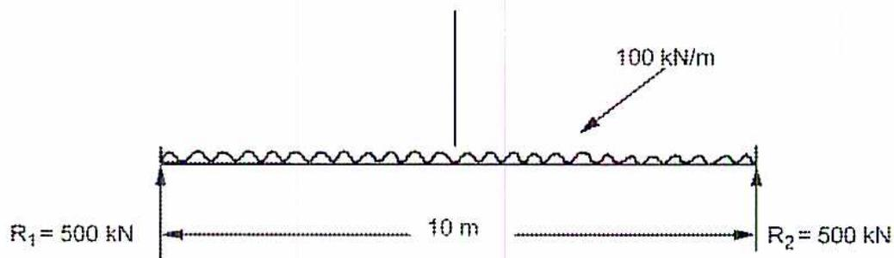
The diagram shows a horizontal beam of length 10 m. A uniformly distributed load (UDL) of 100 kN/m is applied across the entire span. The beam is simply supported at both ends with reaction forces \( R_1 = 500 \text{ kN} \) at the left end and \( R_2 = 500 \text{ kN} \) at the right end.
Figure 26
Simply Supported Beam
Answer
The total load on the beam is \( 100 \text{ kN/m} \times 10 \text{ m} = 1000 \text{ kN} \) . For the beam to be in equilibrium, each reaction must carry half the load or \( 500 \text{ kN} \) . Therefore, the shear force at the left hand side starts at positive \( 500 \text{ kN} \) to counter the force of the support. Moving \( 1 \text{ m} \) to the right, the shear force becomes \( 500 \text{ kN} - 100 \text{ kN} = 400 \text{ kN} \) . At the midpoint of the beam, the shear force is zero and then becomes negative, as shown in Fig. 27. Therefore, the maximum shear force is \( 500 \text{ kN} \) and occurs at both ends of the beam.
Because the shear force is zero in the middle of the beam, this is also the point of maximum bending moment. Take the moments on the right hand side of the beam and assume that the distributed load is concentrated at the midpoint:
$$ \begin{aligned}\text{Bending moment at the center} &= (500 \text{ kN} \times 5 \text{ m}) - [(100 \text{ kN/m} \times 5 \text{ m}) \times 2.5 \text{ m}] \\ &= 2500 \text{ kNm} - [500 \text{ kN/m} \times 2.5 \text{ m}] \\ &= 2500 \text{ kNm} - 1250 \text{ kNm} \\ &= \mathbf{1250 \text{ kNm}} \text{ (Ans.)}\end{aligned} $$
Calculate the bending moment \( 2.5 \text{ m} \) from either side:
$$ \begin{aligned}\text{Bending moment } 2.5 \text{ m from } R_1 &= (500 \text{ kN} \times 2.5 \text{ m}) - [(100 \text{ kN/m} \times 2.5 \text{ m}) \times 1.25 \text{ m}] \\ &= 1250 \text{ kNm} - [(250 \text{ kN/m}) \times 1.25 \text{ m}] \\ &= 1250 \text{ kNm} - 312.5 \text{ kNm} \\ &= \mathbf{937.5 \text{ kNm}} \text{ (Ans.)}\end{aligned} $$
Calculating more points, the bending moments form a parabolic curve which is characteristic of a distributed load.
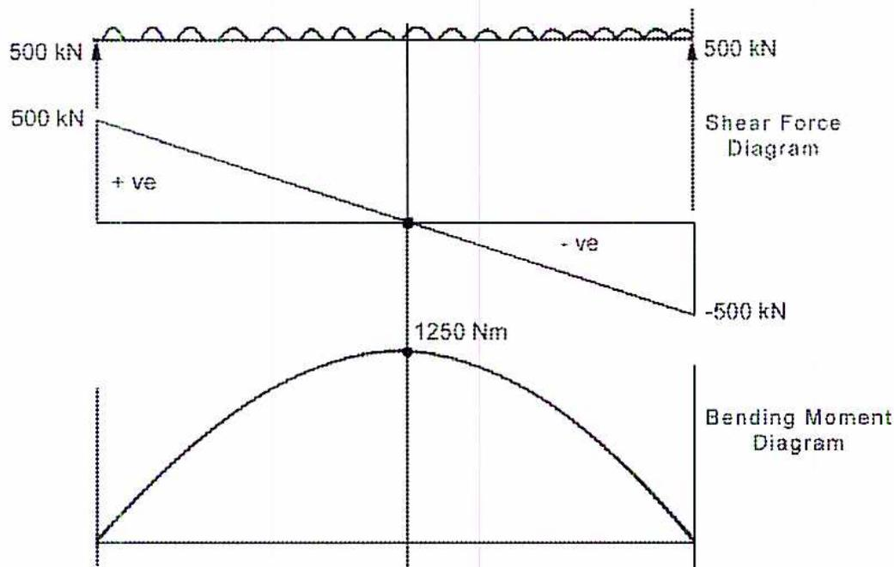
The figure shows two diagrams for a beam subjected to a uniformly distributed load (UDL) of 500 kN/m. The top diagram is the Shear Force Diagram (SFD), which is a straight line starting at +500 kN at the left end, crossing the zero line at the center, and ending at -500 kN at the right end. The bottom diagram is the Bending Moment Diagram (BMD), which is a parabolic curve starting at 0 at the left end, reaching a maximum value of 1250 Nm at the center, and returning to 0 at the right end.
Figure 27
Shear Forces and Bending Moments
Example 15
A cantilever beam is subjected to two forces, one of 500 kN at a distance of 4 m from the fixed end and the other 200 kN, a distance of 8 m from the fixed end. Sketch the shear force and bending moment diagrams.
Answer
Referring to Fig. 28, the shear force at the fixed end is found by adding the forces applied to the right side which equal 700 kN. The shear force drops to 200 kN At the location of the 500 kN force.
Referring to Fig. 28, the bending moment at the fixed end is derived by taking the moments to the right of that point:
$$ \begin{aligned} \text{Bending moment at the fixed end} &= -[(500 \text{ kN} \times 4 \text{ m}) + (200 \text{ kN} \times 8 \text{ m})] \\ &= -(2000 \text{ kNm} + 1600 \text{ kNm}) \\ &= -3600 \text{ kNm (Ans.)} \end{aligned} $$
$$ \begin{aligned} \text{Bending moment at 500 kN load} &= -(200 \text{ kN} \times 4 \text{ m}) \\ &= -800 \text{ kNm (Ans.)} \end{aligned} $$
Note that the moment is considered to be negative because it is clockwise in direction.
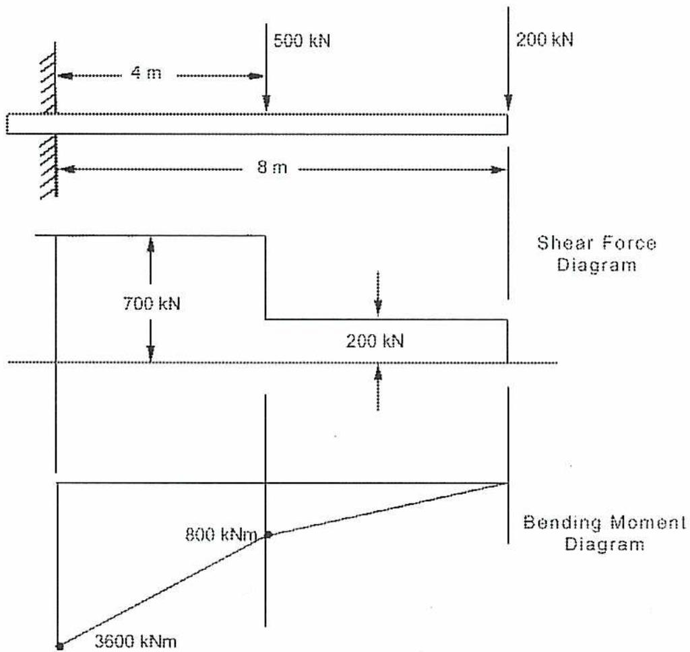
The figure shows a cantilever beam of length 8 m, fixed at the left end and free at the right end. A point load of 500 kN is applied at 4 m from the fixed end. A uniformly distributed load (UDL) of 200 kN/m is applied from 4 m to 8 m. The Shear Force Diagram (SFD) shows a constant positive value of 700 kN from 0 to 4 m, a sudden drop to -200 kN at 4 m, and a constant negative value of -200 kN from 4 to 8 m. The Bending Moment Diagram (BMD) shows a linear increase from -3600 kNm at 0 m to -800 kNm at 4 m, and a parabolic increase from -800 kNm at 4 m to 0 kNm at 8 m.
| Position (m) | Shear Force (kN) | Bending Moment (kNm) |
|---|---|---|
| 0 | 700 | -3600 |
| 4 | 700 (just before), -200 (just after) | -800 |
| 8 | -200 | 0 |
Figure 28
Shear Force and Bending Moment Diagrams
Objective 7
Perform calculations involving the fundamental torsion equation and explain the relationship between torque and stress.
TORSION
When a shaft is used to transmit power in a machine, it is subjected to a rotational force known as twisting moment or torque that tends to twist or turn the shaft. Torque causes a shear force in the shaft. A deflection of the layers of metal which make up the shaft occurs with twisting in the shaft (see Fig. 29) and this deflection is called torsion. The shear forces are related to the angle of twist to determine the torque applied and to derive the power transmitted. The amount of shear force or torsion can be calculated by knowing the angle of twist at the shaft face in radians ( \( \theta \) ) and the radius from the centre to the outside surface of the shaft. This principle is the basis for torquemeters that measure the power output of rotating equipment.
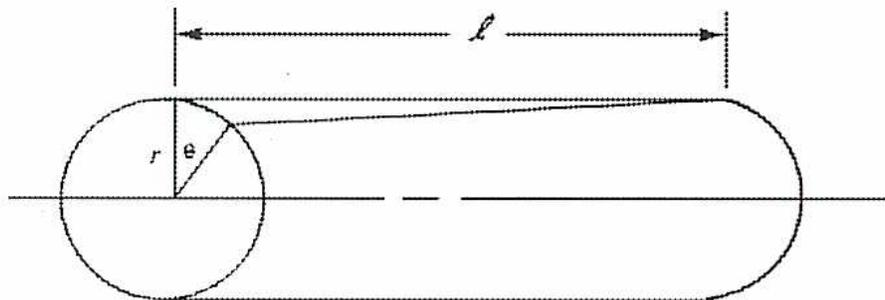
Figure 29
Shaft Torsion
The fundamental torsion equation is used to determine the shear stress at any point on the radius. The maximum stress exists at the outer periphery of the shaft. This equation applies to circular shafts only.
$$ \tau = \frac{Tr}{J} $$
where
\( \tau \) = shear stress, pascals
\( T \) = twisting moment or torque, Nm
\( J \) = polar second moment of area of cross-section about shaft, \( m^4 \)
\( r \) = radius of shaft, m
\( G \) = modulus of rigidity, pascals
\( \theta \) = angle of twist, radians
The shear stress can be expressed in terms of shear strain and the modulus of rigidity as per \( G = \frac{\tau}{\gamma} \) . The shear strain can also be calculated from the angle of twist (measured in radians) by the relationship:
$$ \gamma = \frac{r\theta}{l} $$
so that the torsion equation becomes:
$$ \tau = \frac{Tr}{J} $$
$$ \text{but, } \tau = G\gamma $$
$$ \tau = \frac{Tr}{J} = G\gamma $$
$$ \text{also, } \frac{T}{J} = \frac{\delta}{r} = \frac{G\theta}{l} $$
$$ \frac{Tr}{J} = \frac{Gr\theta}{l} $$
The torque can then be determined by the equation:
$$ T = \frac{G\theta J}{l} $$
Another calculation that is important when dealing with torsion is that of the polar second moment of a shaft. When a number of different areas are multiplied by the squares of their distances from a common point of reference, then the sum of the resulting products is called the second moment of the total area.
The second moment of a shaft, taken from its polar centre, is thus called the polar second moment of the shaft, and it is referred to mathematically as \( J \) .
The polar second moment for a solid shaft is:
$$ J = \frac{\pi}{2} r^4 $$
or
$$ J = \frac{\pi d^4}{32} $$
and for a hollow shaft:
$$ J = \frac{\pi}{2} (r_1^4 - r_2^4) $$
or
$$ J = \frac{\pi}{32} (d_1^4 - d_2^4) $$
Example 16
A rotating solid shaft of 200 mm diameter twists \( 0.75^\circ \) over a length of 4 m. If the modulus of rigidity is 100 GPa, calculate the torque transmitted and the maximum shear stress.
Answer
The twist in radians is determined by the fact that there are \( 2\pi \) radians in a circle so that
$$ \begin{aligned}\theta &= \frac{0.75}{360} \times 2\pi \text{ radians} \\ &= 0.0131 \text{ radians}\end{aligned} $$
The polar second moment is found using the equation \( J = \frac{\pi r^4}{2} \) :
$$ \begin{aligned}J &= \frac{\pi d^4}{32} \\ &= \frac{\pi \times 0.2^4}{32} \\ &= 0.0002 \text{ m}^4\end{aligned} $$
The torque is from the equation \( T = \frac{G\theta J}{l} \) :
$$ T = \frac{G\theta J}{l} = \frac{100 \times 10^9 \text{ Pa} \times 0.0131 \times 0.0002 \text{ m}^4}{4} $$
$$ T = 25 \times 10^9 \text{ Pa} \times 0.0131 \times 0.0002 \text{ Nm} $$
$$ T = \mathbf{65.50 \text{ kNm}} \text{ (Ans.)} $$
The stress is calculated from the torsion equation:
$$ \tau = \frac{Tr}{J} $$
$$ \tau = \frac{65.5 \text{ kNm} \times 0.1 \text{ m}}{0.0002 \text{ m}^4} $$
$$ \tau = 32\,750 \text{ kN/m}^2 $$
$$ \tau = \mathbf{32.75 \text{ MPa}} \text{ (Ans.)} $$
Objective 8
Explain the relationship between torque and power, and calculate maximum and mean torque for solid shafts of circular cross section.
TORQUE AND POWER
In the module on Angular Motion (PE2-1-9), the relationship between torque (T in Nm), speed (n in rev/min) and power (P in watts) was established as
$$ P = 2\pi T \frac{n}{60} $$
Another form of this equation can be used which uses \( \omega \) (angular velocity in rad/s)
$$ P = T\omega $$
MAXIMUM AND MEAN TORQUE
When using torque to calculate shaft stress and power, it is important to understand whether the torque varies with rotation. In turbines, the torque is constant through each revolution of the shaft. However, in reciprocating engines, the torque varies depending on which part of the cycle the engine is in and whether the engine operates on the Otto or Diesel cycle. In this case, there is a mean torque which applies to the calculation of power. A maximum torque determines the maximum stress on the shaft. It is usually expressed as a ratio of maximum to mean torque.
Example 17
A reciprocating engine runs at 200 rpm and drives a 400 mm diameter solid shaft. The maximum allowable stress is 50 MPa and the ratio of maximum to mean torque is 1.5. What is the maximum power that can be transmitted?
Answer
The polar inertia is found using the equation \( J = \frac{\pi r^4}{2} \)
$$ J = \frac{\pi r^4}{2} $$
$$ J = \frac{\pi \times 0.2^4}{2} $$
$$ J = 0.0025 \text{ m}^4 $$
The torque is then obtained from the equation \( \tau = \frac{Tr}{J} \) :
$$ \tau = \frac{Tr}{J} $$
$$ T = \frac{\tau J}{r} $$
$$ = \frac{50 \times 10^6 \text{ N/m}^2 \times 0.0025 \text{ m}^4}{0.2 \text{ m}} $$
$$ = 625\,000 \text{ Nm} $$
$$ = 625.0 \text{ kNm} $$
Since this is the maximum torque, the mean torque is:
$$ \begin{aligned} \text{mean torque} &= \frac{\text{maximum torque}}{1.5} \\ &= \frac{625.0}{1.5} \\ &= 416.67 \text{ kNm} \end{aligned} $$
From equation, \( P = 2\pi T \frac{n}{60} \) , the maximum power is:
$$ \begin{aligned} P &= 2\pi T \frac{n}{60} \\ &= 2\pi \times 416.67 \times \frac{200}{60} \\ &= 8726.72 \text{ kW (Ans.)} \end{aligned} $$
Objective 9
Calculate stress in coupling bolts due to torque.
COUPLINGS
Bolted couplings are often used to connect shafts. Both the shaft and the bolts must be able to transmit the torque. If the radius at which the bolts are installed is known, the force applied to the bolts can be calculated. Given maximum allowable stress and the total sectional area of the bolt material, the required cross-sectional area and diameter of the bolts can be determined. If the bolt diameter and properties are known, it is possible to calculate the maximum torque allowed.
Example 18
Two 400 mm solid shafts are connected by a coupling which has 6 bolts on a 750 mm diameter circle. If the maximum allowable stress of the bolt material and the shaft is 50 MPa, what is the minimum diameter for each bolt?
Answer
The polar inertia is found using the equation \( J = \frac{\pi r^4}{2} \)
$$ J = \frac{\pi r^4}{2} $$
$$ J = \frac{\pi \times 0.2^4}{2} $$
$$ J = 0.0025 \text{ m}^4 $$
The torque is then obtained from the equation \( \tau = \frac{Tr}{J} \) :
$$ \tau = \frac{Tr}{J} $$
$$ T = \frac{\tau J}{r} $$
$$ = \frac{50 \times 10^6 \text{ N/m}^2 \times 0.0025 \text{ m}^4}{0.2 \text{ m}} $$
$$ = 625\,000 \text{ Nm} $$
$$ = 625.0 \text{ kNm} $$
The force applied to the bolts is found by dividing the torque by the radius of the bolts:
$$ \begin{aligned}\text{Force} &= \frac{\text{torque}}{\text{radius}} \\ &= \frac{625.0 \text{ kNm}}{0.375 \text{ m}} \\ &= 1666.67 \text{ kN}\end{aligned} $$
Because Force = stress \( \times \) area , the total area required is:
$$ \begin{aligned}\text{Force} &= \text{stress} \times \text{area} \\ \text{area} &= \frac{\text{Force}}{\text{stress}} \\ A &= \frac{1666.67 \times 10^3 \text{ kN}}{50 \times 10^6 \text{ kN/m}^2} \\ &= 0.0333 \text{ m}^2\end{aligned} $$
Thus, the area of each bolt will be:
$$ \begin{aligned}A &= \frac{0.0333 \text{ m}^2}{6} \\ &= 0.0056 \text{ m}^2\end{aligned} $$
The radius of each bolt should be:
$$ \begin{aligned}A &= \pi r^2 \\ r^2 &= \frac{A}{\pi} \\ r &= \sqrt{\frac{0.0056 \text{ m}^2}{3.1416}} \\ r &= \sqrt{0.0018} \\ r &= 0.0422 \text{ m}\end{aligned} $$
The diameter of each bolt should be: 0.0844 m
84.4 mm (Ans.)
- 1. A simply supported beam is loaded as shown in Fig. 30. What supporting forces are required at \( R_1 \) and \( R_2 \) to maintain the beam in equilibrium?
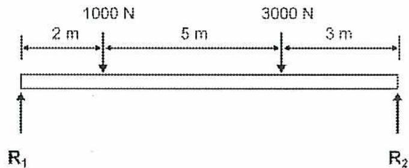
Figure 30
Simply Supported Beam
- 2. Define a centroid. Define the first moment of areas and explain how it relates to the location of a centroid.
- 3. A circular column with a diameter of 40 cm carries a compressive load of 200 kN. What is the stress on the column?
-
4. A steel bar with a diameter of 6 cm and a length of 5 m is subjected to a tensile load of 250 kN. If the factor of safety is 5.8 and
\(
E
\)
is 225 GPa, calculate the following:
- a) Stress
- b) Strain
- c) Increase in length
- d) Elastic limit
-
5.
- a) Calculate the safe load in kN that can be carried by a stud of \( 645.16 \text{ mm}^2 \) cross-sectional area allowing a safe working stress of \( 30 \text{ MN/m}^2 \) .
- b) Calculate the number of studs required to hold the cylinder cover of a diesel engine where the maximum pressure in the cylinder is 4.5 MPa and the diameter of the cover is 400 mm.
- 6. A steel bar is covered by a copper sheath over its entire length. This sheath is firmly affixed to the bar so that one cannot expand more than the other. The cross-sectional area of the steel bar is twice the cross-sectional area of the copper sheath. Calculate the stresses in the steel and copper when this bar is heated to 150°C.
Given:
Coefficient of linear expansion for the steel = \( 12 \times 10^{-6}/^{\circ}\text{C} \)
Coefficient of linear expansion for the copper = \( 17 \times 10^{-6}/^{\circ}\text{C} \)
\( E \) for steel = \( 210 \text{ GN/m}^2 \)
\( E \) for copper = \( 100 \text{ GN/m}^2 \)
- 7. A cantilever 10 m long carries two concentrated loads, one at the free end and the other at the midpoint of the beam. The bending moments at the wall is 65 kN and, at the middle of the beam, 40 kN. Calculate the magnitudes of both loads.
- 8. A 406 mm diameter solid steel shaft in a reciprocating engine develops 7150 kW. The maximum stress allowed is \( 60 \text{ MN/m}^2 \) and the maximum to mean torque ratio is 1.75:1. Calculate the rpm of the engine.
- 9. Two 450 mm solid shafts are connected by a coupling which is 900 mm in diameter. The maximum allowable stress of the bolt material and the shaft is 50 MPa. If the diameter of each bolt is 90 mm, calculate the number of bolts required?